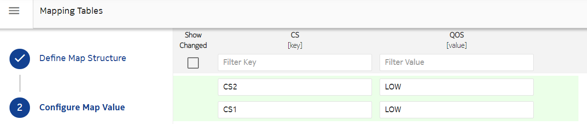
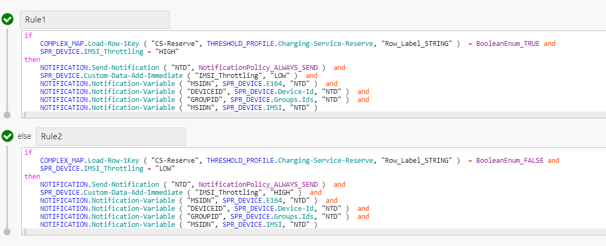
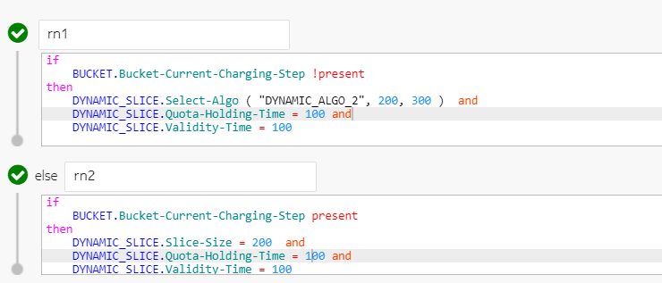

NCC allows operators to send notifications based on resource usage. The Send-Notification action is supported for resource based counters.
The following BUCKET source context can be used to select the algorithm to be used for the call.
| Attribute name | Description |
|---|---|
| Bucket-Current-Charging-Step | The current step if it is a step charge bucket. |
| Bucket-Name | The name of the bucket which is being used while rating a call. |
| Bucket-Unit-Type | The unit type of bucket such as TIME, MONEY, VOLUME, UNIT. |
| Bundle-Name | The name of the bundle which is being used while rating a call. |
| Regular-Current-Value |
The regular bucket current value before reservation. It is of type Big decimal. The rules does not support operations between Big decimal and other types such as integer, long. Equal operation is not supported between Big decimal types. Only >, <. >=, <= are supported. The following rules can result in failure: Rule 1: DYNAMIC_SLICE.Slice-Size = Bucket.Regular-Current-Value Here, slice size is of type Long. Rule 2 : if Bucket.Regular-Current-Value = 1000 |
| Total-Current-Value |
The sum of regular bucket current value and it's carryover current value before reservation. It is of type Big decimal. The rules does not support operations between Big decimal and other types such as integer, long. Equal operation is not supported between Big decimal types. Only >, <. >=, <= are supported. The following rules can result in failure: Rule 1: DYNAMIC_SLICE.Slice-Size = Bucket.Total-Current-Value Here, slice size is of type Long. Rule 2 : if Bucket.Total-Current-Value = 1000 |
If a bundle is added or removed, then the configuration of sending RAR must be done by operators.
The carryover buckets are excluded from the BUCKET source context. The rules applicable to normal bucket are applicable to carryover buckets as well.
Example 1: Toggle speed based on data in XML notification
Consider that a group has a device attached to it. Group has subscribed to unlimited bundles which can be used by devices linked to it. Device has its own bundle. Operators can toggle the QoS based on data received in notification. Once the device bundle is used up completely and there are no more resources available for the call, then unlimited bundles are used for the call. In this case, operators can throttle the speed to LOW. If another bundle becomes active (either by subscription renewal or a new subscription), the speed is set to HIGH. The toggling of speed can be maintained in a custom data of device or can be managed using rules. Once a notification is sent, custom data of device is updated. The bundle usage can be tracked using the resource based counters. Operators can select different slicing algorithm based on the bucket used for the call. That is, select dynamic algorithm for normal buckets and static algorithm for step-buckets.
Configure the following entities:
Create a custom data for Device IMSI-Throttling with HIGH as default value. Attach this custom data to the Device.
Create charging services (CS1 and CS2) for unlimited bundles to be used for the complex map.
Create a complex map (CS-Reserve) to be used in threshold rules.
Create a resource based counter and attach it to the Device. Ensure to select Resource Based when you create a counter. Note that, based on your requirement you can attach the resource based counter to a Device or Group.
Create a Notification Profile that contains the notification text to be sent. In the current case, you can configure the notification content as follows:
Device-ID=$[DEVICEID],GROUP-ID=$[GROUPID],IMSI=$[IMSI],E164=$[MSISDN],Throttling-Status=$[IMSI_Throttling_Status]
Configure a rule in Threshold to send notification for HIGH or LOW speed as follows:
Configure the quota management (slicing profile) as follows to select dynamic or static algorithm based on whether normal or step-bucket is used for the call. For carryover bucket, rules applied for normal bucket are applicable.
Example 2: Multiple scenarios
Consider that a device is configured with a custom data and has the following subscriptions:
Unlimited Bundle B1 BOU with two charging services, having a bucket in CS1 in pass 0 and a free rate in CS2 in pass 1.
Bundle B2 non-BOU having buckets in pass 0.
Default bundle B3 non-BOU having step-bucket in pass 1.
The initial quota management (slicing profile) algorithm configuration is Dynamic slicing algorithm.
Scenario 1: The unlimited Bundle B1 BOU with bucket available is applicable and active. The custom data of device is initially set to false, indicating that speed is HIGH. Subscriber consumes from Bundle B1 and custom data is not changed and throttling notification is not sent.
Scenario 2: The unlimited Bundle B1 BOU with no buckets available and not applicable. Subscriber consumes from Bundle B2, so custom data is not changed and throttling notification is not sent.
Scenario 3: The unlimited Bundle B1 BOU with no bucket available is applicable and active. There is no other resource available. The custom data of Device is initially set to false, indicating that speed is HIGH. Subscriber consumes from Bundle B1 as free rate form pass 1. The custom data is changed to True and throttling notification is sent. If a subscriber reports another consumption from B1, then the custom data is not changed as its already True and notification is not sent.
Scenario 4: The unlimited Bundle B1 is not applicable and there is no other resource available in pass 0. The custom data of device is True. On consumption, default bundle B3 is used and the value of custom data is changed to false and throttling notification is sent. Since B3 is configured with step-bucket, static algorithm is used instead of dynamic algorithm.
Scenario 5: The unlimited Bundle B1 BOU with no bucket available is applicable but expires. There is no other resource available. The custom data of device is True. On consumption, the default bundle B3 is used and the value of custom data is changed to false and throttling notification is sent. Since B3 is configured with step-bucket, static algorithm is used instead of dynamic algorithm.
{kind=link}
{kind=link}
{kind=link}